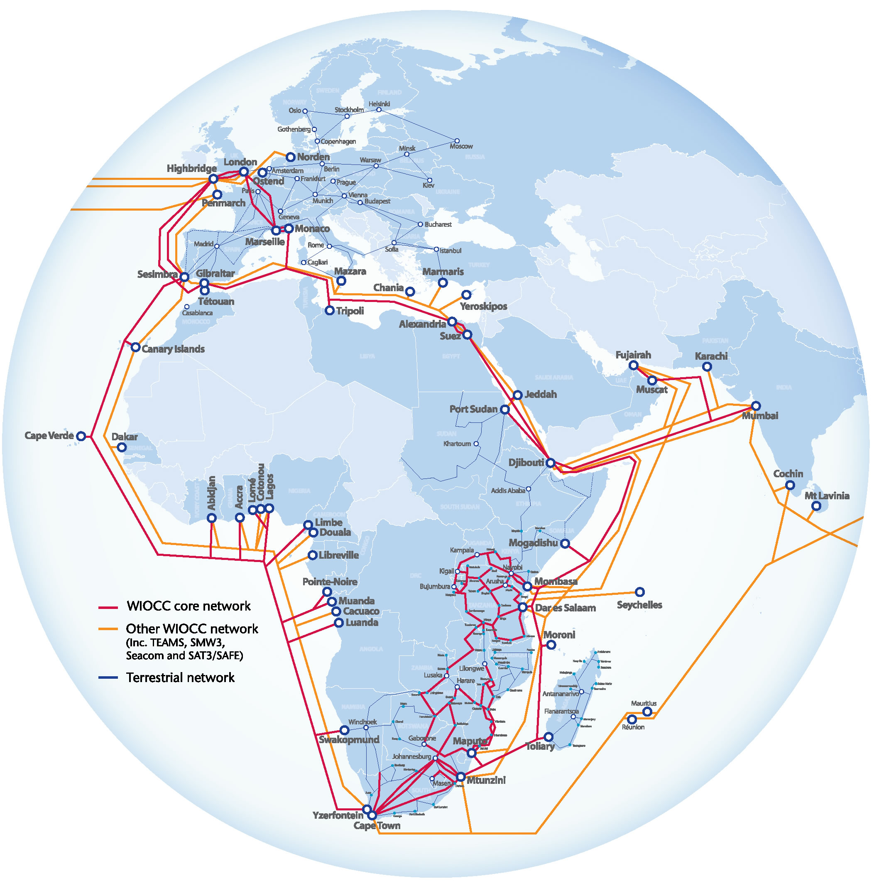

Welcome to our world…
WIOCC has firmly established itself as Africa’s carriers’ carrier, providing international and African telcos and internet service providers with unrivalled high-speed, resilient and diverse capacity into, within and out of Africa.
Customers benefit from our seamless, end-to-end managed, international connectivity services, delivered via strategic investments in multiple submarine networks to connect Africa to the world, and the most extensive fibre-optic network serving sub-Saharan Africa.
If you are looking to develop your investment in the African continent, you should talk to WIOCC – Africa’s carriers’ carrier.